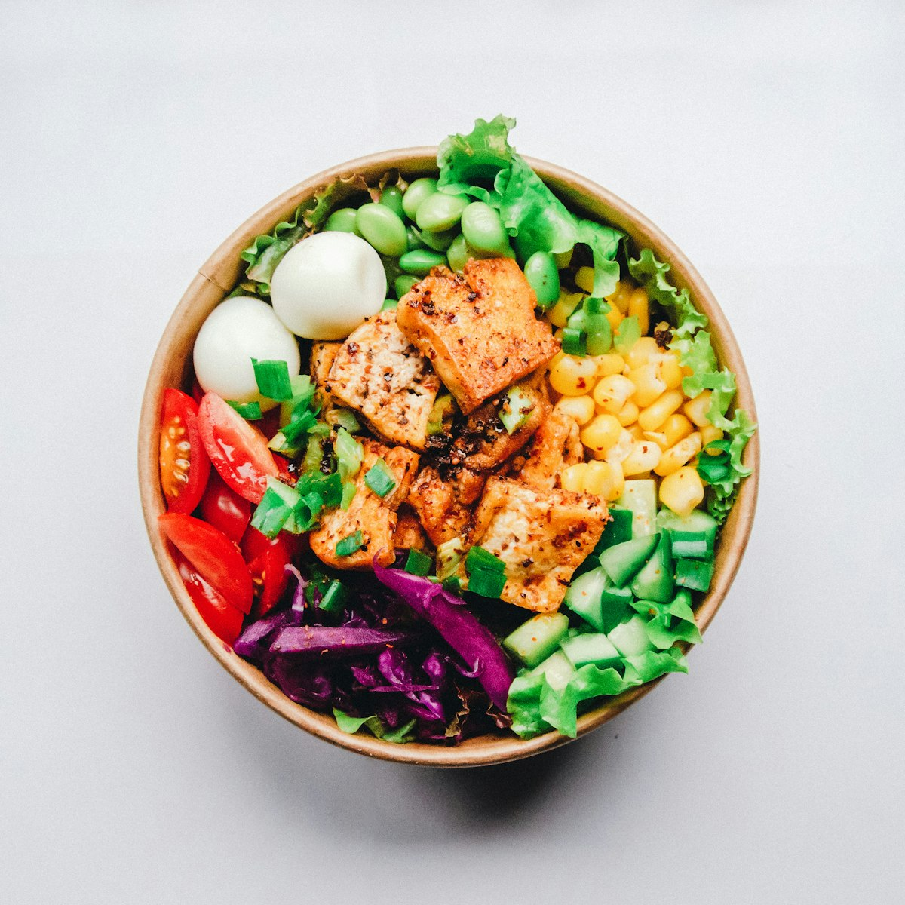
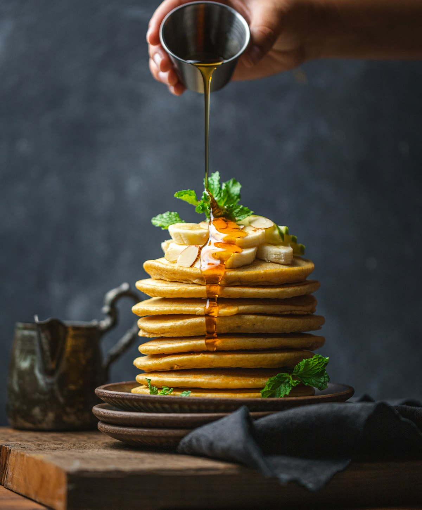
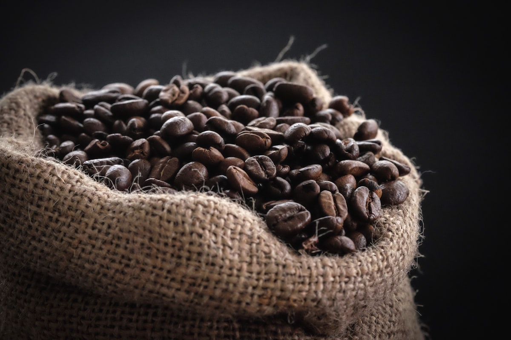

Tostado de palta y huevo poché
Pan de masa madre, palta, huevo poché y semillas tostadas.
Café de especialidad, productos de estación y panadería hecha en casa. Brunch de barrio, sin apuro.


Pan de masa madre, palta, huevo poché y semillas tostadas.


Cada grano que servimos pasó por nuestra tostadora en lotes pequeños. Trabajamos con productores a los que conocemos por nombre, y buscamos que ese trabajo se sienta en cada taza.
La panadería también es nuestra: masa madre fermentada en frío, medialunas horneadas a la mañana y recetas que cambian con la estación.

Tostado propio, entrenamiento barista y asesoría para que el café sea parte de la experiencia de tu carta.